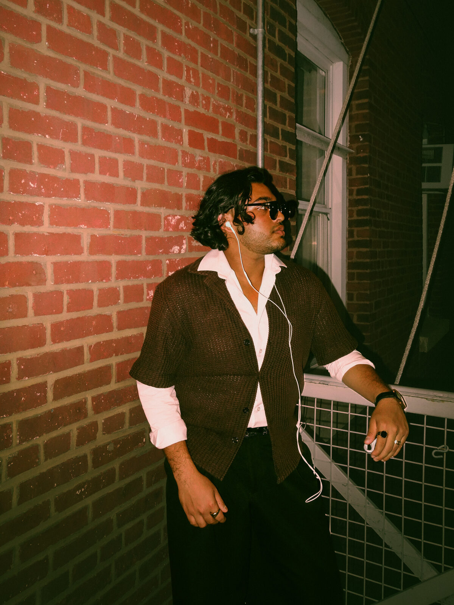

Flash Nights
Direct flash, brick walls and midnight errands — the city caught off-guard, and loving it.
3 frames · street & flash
New York City — Personal Shoots & Events


New York City — Personal Shoots & Events
The working portfolio of Waimeer Chowdhury — portraits, personal shoots and events, caught between studio warmth and street-flash midnight.
Honest light, real people, and the in-between moments most frames blink past — kept forever in emerald & white.
Portfolio
 01
01
Street editorial · NYC
 02
02
Studio session · warm seamless
 03
03
Concept series · rooftop
 04
04
Outdoors · heritage walls
 05
05
Studio session · warm seamless
 06
06
Street editorial · NYC
 07
07
Outdoors · waterfront dusk
 08
08
Studio session · warm seamless
 09
09
Concept series · night
 10
10
Outdoors · park pavilion
 11
11
Studio session · warm seamless
 12
12
Flash editorial · NYC
 13
13
Outdoors · park pavilion
 14
14
Studio session · warm seamless
Chapters
Drag to explore

Direct flash, brick walls and midnight errands — the city caught off-guard, and loving it.
One seamless backdrop, one striped shirt, zero serious faces. Studio days that became inside jokes.
A rooftop, a mask and a golden-hour skyline — a concept series about the hero off-duty.
Porticos, park pavilions and waterfront dusk — slow walks that turn into portraits.

About
It started with friends and a camera at events. It never really stopped.
Portraits, parties, editorial and concept work across New York City. Relaxed, cinematic, a little bold, and always close.
— Waimeer Chowdhury, NYC